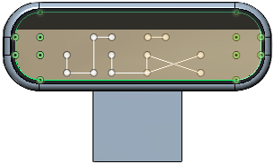

Ju-X: designs Curious Tools for Music Creation!
Founded in 2003, Ju-X was started by founder Juno as an importer company that deals in rare electronics, vintage synths, and pro-audio equipments. Soon started synthesizer restoration and modification service in 2004, and developed special “Digital” modifications for drum machines and sequencers in 2006. After 2008, Ju-X began moving into software industry, currently 10+ apps are released by 2014.
Our mission is simply
Peace <-- Music <-- New Tools <-- Ju-X
We deliver new technological tools for music creation, support music scene to be fresh by that, and music brings love and peace. We design curious tools, you enjoy the new possibilities.
Juno: Product Design Engineer / Rare Electronics Otaku (˚v°)
From Osaka Japan, formerly based in Detroit MI, San Francisco, and Los Angeles CA
Background: Sound Science, Mathematics, Architecture, and Music
Expert in
Designing products for music and sound creation, such as:
- Audio and MIDI Softwares
- Plug-in Synthesizers and Effects
Formerly worked on hardwares, such as:
- Synthesizers
- Sequencers and Drum Machines
- Audio Signal Processors
- Hall and Room Acoustic Engineering
C/C++/Objective-C Programmer, Software Engineer
Do you have an Audio/MIDI software project on your mind? Feel free to contact Juno today!
Special Thanks to
Mic Moogulator from
SynMag for testing and examining every app.
Hannes Paqualini from
papernoise design studio for the new Ju-X logo and GUI parts design.
